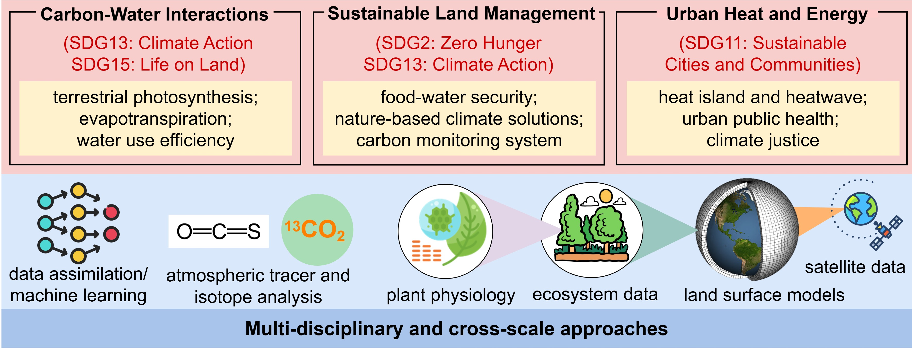

Short-bio
I am currently a Ph.D. candidate in soil and crop science at Cornell University,
under the instruction of Prof. Ying Sun.
I am expected to graduate in May 2025, and then join the lab of Prof. Paul Moorcroft at Harvard University as an Environmental Fellow in July 2025. I obtained my Bachelor's and Master's degree
at Nanjing University, advised by Prof. Wenfeng Zhan.
Research overview
My research explores the complex interactions between the terrestrial carbon-water-energy nexus, human activities, agricultural practice, and climate change at multiple scales.
To achieve that, I pioneer innovative and multi-disciplinary methodological approaches that integrate advanced plant physiological theories, cross-scale ecological datasets,
atmospheric measurements, process-based models, and machine learning/data assimilation tools, seeking knowledge advance and breakthrough solutions for challenges
in sustainable development over diverse ecosystems.
Currently my research programs span three inter-connected themes:
[1] Understanding carbon-water interactions through synergies of innovative tracers.
[2] Supporting sustainable land management for food-water security and climate action.
[3] Monitoring heat and energy dynamics and promoting urban sustainability.

For more details, please see Research and Publication.
News
-May 2025. Jiameng passed her Ph.D. dessertation defense!
-Apr. 2025. Jiameng was selected as a Harvard University Environmental Fellow!
-Dec. 2024. Jiameng received MacDonald Musgrave Award, the HIGHEST honor bestowed by her department section!
-Oct. 2024. Jiameng's paper was online on Nature! Check the paper
-Mar. 2024. Jiameng received Barbara McClintock Award! The award is granted to graduate students with the best potential and greatest background merit.
(last updated on 04/18/2025)